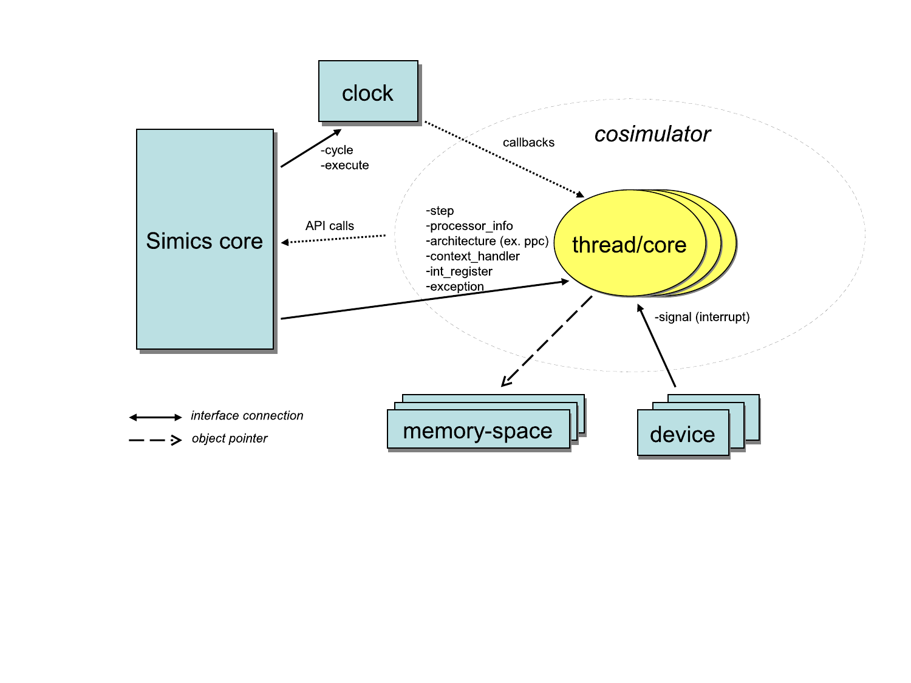
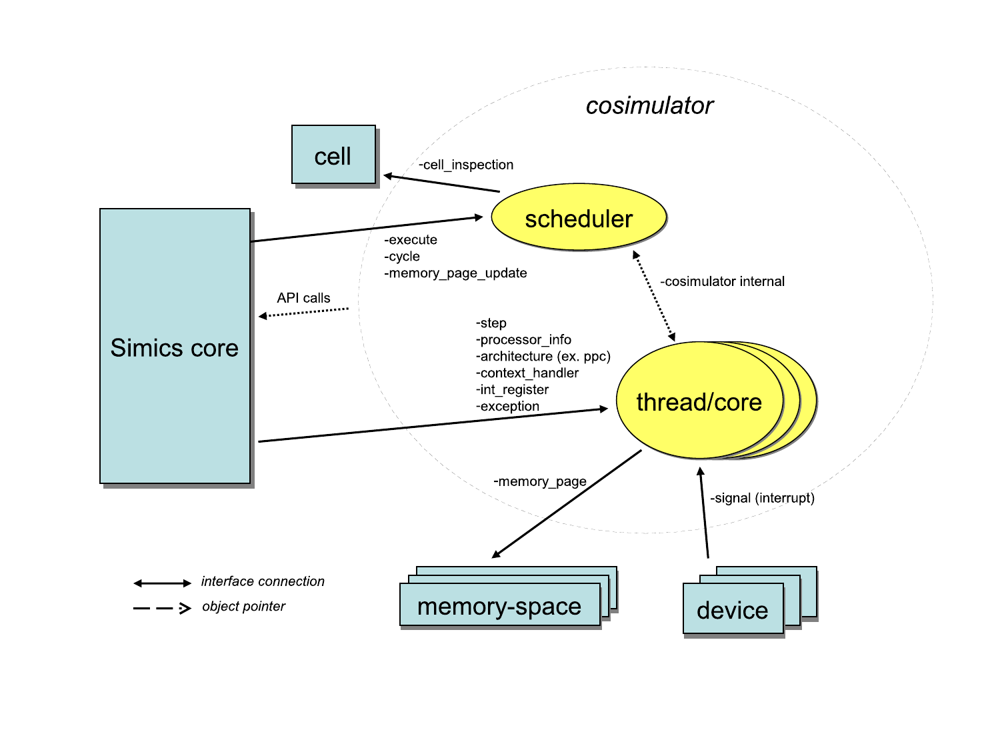
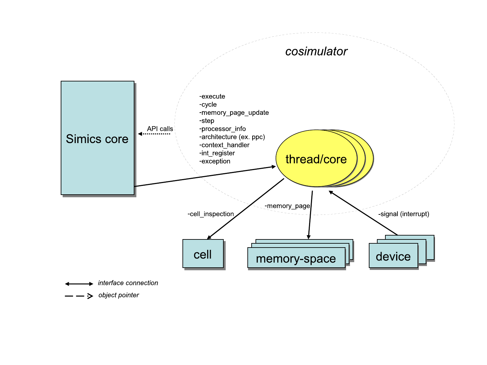

This chapter describes how to interface processors to Simics depending on the requirements on the simulation.
A processor model defines one or more classes to integrate with the Simics environment. Simics classes have attributes and implement interfaces. Even though Simics classes can be written in DML, C, C++, or Python, only C and C++ is currently supported for writing processor models. See the Configuration and Checkpointing chapter in the Simics User’s Guide for more information about classes in Simics and how to instantiate them into Simics objects.
A key issue for fast simulation is how it is scheduled.
A scheduler is an object that implements the execute interface.
Such an object advances virtual time for itself and for the objects associated with it.
A processor that also is a scheduler can thus simulate a sequence of instructions that occur at different points in virtual time without having to return back to the framework.
Processors can be scheduled in any of the following ways:
execute and cycle interfaces used by the framework to schedule the set of processors.
See figure 2.
This type of scheduling allows the simulation to run faster since it requires less synchronization and fewer context switches.
The drawback is that both the cycle interface and the optional step interface are hard to implement.execute and cycle interfaces are here implemented in each thread/core objects instead of in a central scheduler object.
See figure 3.
This is the model used by all standard Simics processors models.
The multiple clocks in this type of setup are kept by Simics within a defined window of virtual time.
As the clocks are driven individually, this leads to temporal decoupling between the processors.The documentation for the execute interface describes how the Simics core controls the simulation.
Cycle driven models are typically slow because all objects run in lock-step mode, advancing one cycle at a time. The setup has a single clock object that handles timing for all objects.
Figure 1 shows an example setup of event driven processors. This type of setup is suitable for clock-cycle-accurate HDL simulator models.

The objects in figure 1 are:
execute interface and the cycle interface.
The clock handles all timing in the system.processor_info_v2, int_register, and exception interfaces.
These interfaces are used by standard Simics commands for showing time, events, register contents, instruction disassemble, etc.In the setup shown in figure 2, the processors export one implementation of the time event queue instead of having a Simics object do that.
The result is that the processor model has better control of when new events are added, and the processor model itself triggers the events.
The Simics core instructs the scheduler to run the simulation forward through the execute interface.
All objects in a cell implementing the execute interface will be kept within a time window defined by the time_quantum attribute of the cell.
Having a quantum that is significantly larger than a single cycle (as in a cycle driven model) allows for faster simulation since optimizations such as binary translation and hypersimulation can then be employed.

The objects in figure 2 are:
execute and cycle interfaces.
Simics core and devices will use this object for posting events and for driving the simulation.
The scheduler object may correspond to something particular in hardware, such as a processor with multiple cores.processor_info_v2 interface.
These interfaces are used by standard Simics commands for showing time, events, register contents, instruction disassemble, etc.The processor model has control of time and can optimize for running long quanta. The Simics core notifies the execute object that it can start to execute and it is up to the implementation to control how everything is scheduled. The threads/cores may be simulated in parallel with multiple threads. Note that care must be taken if for example deterministic execution should be supported.
An example system with this setup can be found in [simics]/targets/cosim/queues-in-cosimulator.simics.
The source code for the example can be found in [simics]/src/extensions/sample-risc.
In the setup shown in figure 3, each processor implements the scheduling interfaces.
This is a special case of the previous mechanism where each set of processors only include a single processor.
The Simics core instructs the scheduler to run the simulation forward through the execute interface.
All objects in a cell implementing the execute interface will be kept within a time window defined by the time_quantum attribute of the cell.
Having a quantum that is significantly larger than a single cycle (as in a cycle driven model) allows for faster simulation since optimizations such as binary translation and hypersimulation can then be employed.

The objects in figure 3 are:
execute and cycle), and the interfaces used to control and inspect the individual cores (processor_info_v2, step, int_register, etc).This model is similar to the previous model with the difference that each thread/core defines its own time domain. This also means that each object will be driven individually by the Simics core. This is the type of model used by all standard processor models in Simics.